Chapitre 7 Cartographie, Distribution et Échelle de couleurs
Contexte : on veut faire une carte choroplèthe d’une variable sur une couche vecteur.
Pour une variable quantitative continue qu’on souhaite représenter par une couleur, il n’est pas toujours possible d’avoir la possibilité d’afficher en légende un gradient couleur (d’ailleurs pas toujours lisible).
Il faut (souvent) classer les valeurs en catégories, et les logiciels proposent diverses méthodes de classifications (on dit aussi discrétisation) où le nombre \(k\) de classes de valeurs (et donc de couleurs) et les méthodes de classification pour fixer leurs bornes varient.
En général on propose 5,7 ou 9 classes :
- pour \(k<5\) trop peu de détails
- pour \(k>9\) difficile de distinguer les classes proches
Il existe également une règle purement indicative : l’indice de Huntsberger, qui fixe le nombre de casse “optimum” :
\[k = 1 + 3.3 log_{10}(N)\]
Avec \(N\) , le nombre d’observations et \(k\) le nombre de classe.
Priorité au cartographe:
C’est le cartographe qui décide en dernière instance du nombre de classes et de leurs bornes. Tout dépend de la question (ou des questions) que le cartographe souhaite aborder avec sa carte. Les valeurs de bornes calculées par des méthodes générales peuvent ne pas être pertinentes. Par exemple , si je devais cartographier des vitesses d’automobilistes sur un réseau routier , je choisirais certainement des bornes égales aux limitations de vitesses : 30, 50 , 90 , 110 et 130, au lieu des bornes proposées par la méthodes des ruptures naturelles ! Tout est question d’intelligibilité pour les gens qui liront la carte.
7.1 Méthodes usuelles de discrétisation
Voici les méthodes de classification que propose QGis :
- Ruptures Naturelles (Jenks) : Minimisation des variances intra-classe et maximisation des variances inter-classe.
- Effectifs égaux (c’est-à-dire des quantiles cf 5.3 )
- Intervalles égaux
- Écart-type : intervalles de 1 ou 0.5 \(\sigma\)
- Jolies ruptures : intervalle égaux “décalés” pour faire joli : nombre ronds, puissances de 10, …
Nous allons voir l’effet de ces méthodes sur une carte choroplèthe de la surface des quartiers de Paris.
7.2 Les données
7.2.1 Géométrie des quartiers de Paris
Pour manipuler et afficher des objets spatiaux avec R, on utilise le package sf.
Les données viennent du site opendata.paris.fr, et sont disponibles à l’adresse : [https://opendata.paris.fr/explore/dataset/quartier_paris/information/]
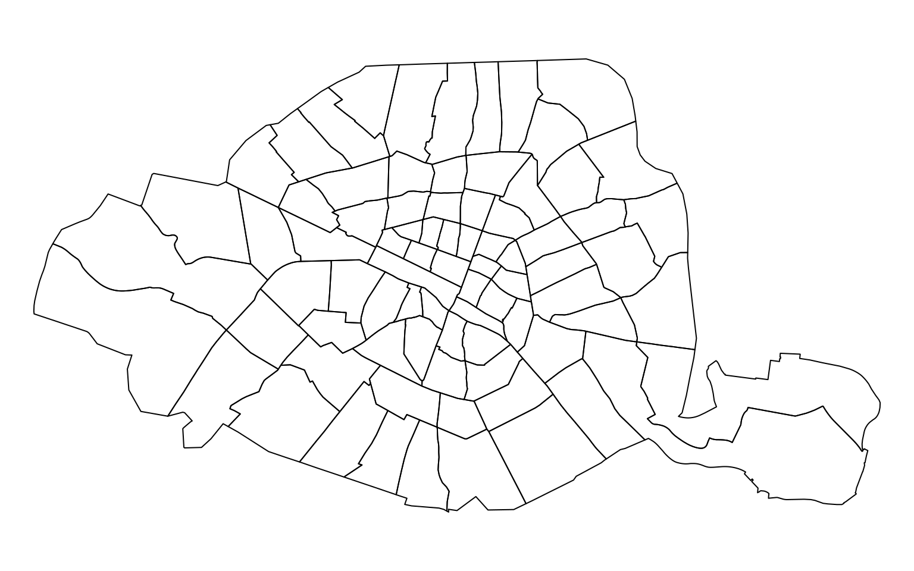
7.2.2 Distribution des surfaces des quartiers
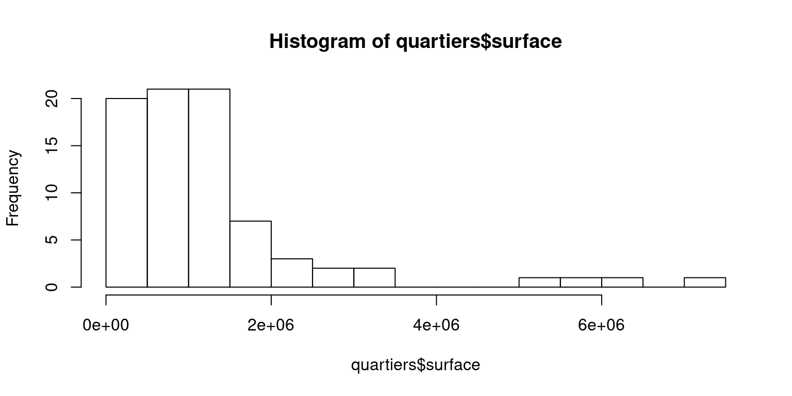
On voit que la distribution est très asymétrique : l’essentiel des quartiers sont de surface faible, et quelques quartiers sont très grands.
On peut en déduire qu’une classification par intervalle égaux produira des classes de surface avec très peu d’individus (valeurs élevées) et des classes avec beaucoup d’individus (valeurs faibles).
7.3 Résultats des méthodes de classification
7.3.1 Classification par défaut
Par defaut la fonction plot du package sf utilise la méthode pretty() avec 10 ruptures (\(9\pm1\) classes) : ce sont des intervalles égaux.
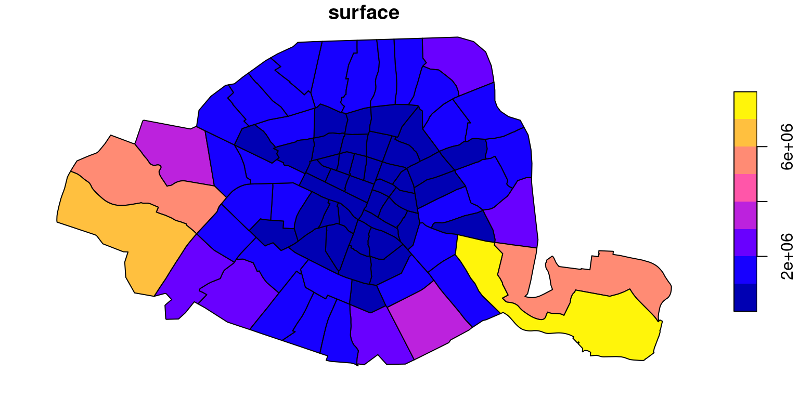
À la lecture de cette carte, on retrouve les défauts de la classification par intervalle égaux. On voit que les quartiers du centre, nombreux et petits, sont tous dans la même classe , ici en bleu, et visuellement peu discriminés: les autres couleurs que le bleu sont affectés aux grands quartiers, peu nombreux.
7.3.2 Méthode Jenks à 5 , 7 et 9 classes
La méthode de Jenks essaye de “bien classer” la population en minimisant la variance intra-classe et en maximisant la variance inter-classe, à la manière de l’algorithme des k-means.
On peut donc s’attendre à une coloration des quartiers qui colle mieux aux surfaces :
par(mar=c(0,0,0,0))
plot(quartiers["surface"], breaks="jenks", nbreaks = 5, main = "5 breaks")
plot(quartiers["surface"], breaks="jenks", nbreaks = 7, main="7 breaks")
plot(quartiers["surface"], breaks="jenks", nbreaks = 9, main= "9 breaks")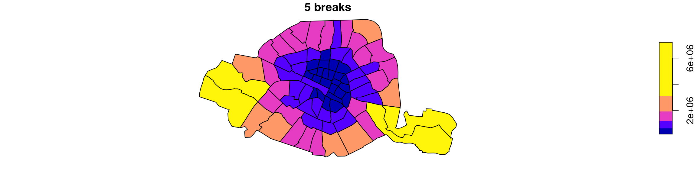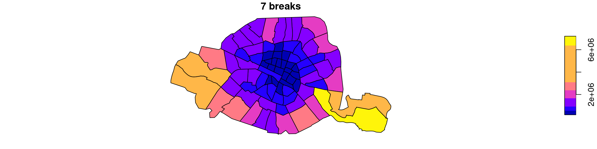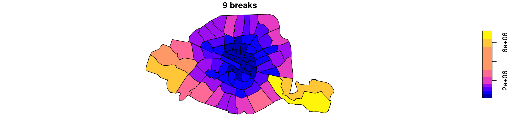
On observe sur ces cartes une coloration plus concentrique: les quartiers du centre sont toujours en bleu foncé, mais les quartiers immédiatement voisins sont bien distincts, en violet, ainsi que les quartiers périphériques, en rose, qui sont nettement plus grands.
7.3.3 Effectifs égaux
On utilise la fonction quantile avec une séquence de proportions de 25% (argument probs de la fonction), ce qui va nous calculer les quartiles de la surface des quartiers.
Ces quartiles sont donnés en argument de la fonction plot du package sf.
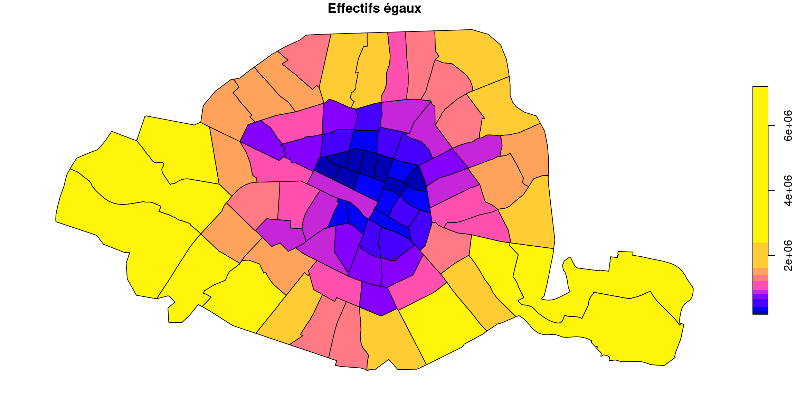
Cette carte affiche donc les quartier répartis dans 4 classes , chacune contenant 25% des quartier de Paris. Elle est forcément un peu grossière, mais très discriminante : les quartiers du centre ne sont plus d’une couleur homogène, et les frontières entre les classes sont plus accidentées, moins douces que pour Jenks par exemple.
Essayons avec 5 classes de 20% de l’effectif (on modifie la séquence de proportions dans la fonction quantile) :
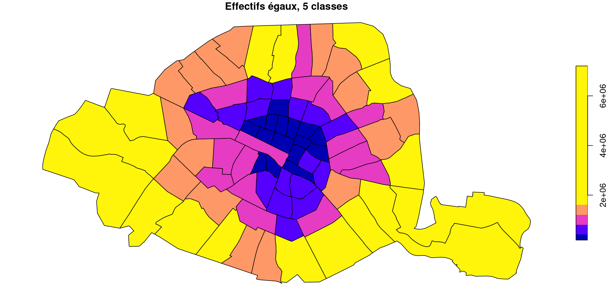
Ça n’est guère plus convaincant que la version à 4, mais il fallait essayer !
7.3.4 Intervalles égaux
Comme pour la méthode par défaut (pretty), qui est grosso modo la même chose, on enpeut pas s’attendre, étant donné l’allure asymétrique de la distribution des surfaces, que la méthode des effectifs égaux soit très adaptée.
par(mar=c(0,0,0,0))
plot(quartiers["surface"], breaks="equal", nbreaks = 5, main = "5 Intervalles égaux")

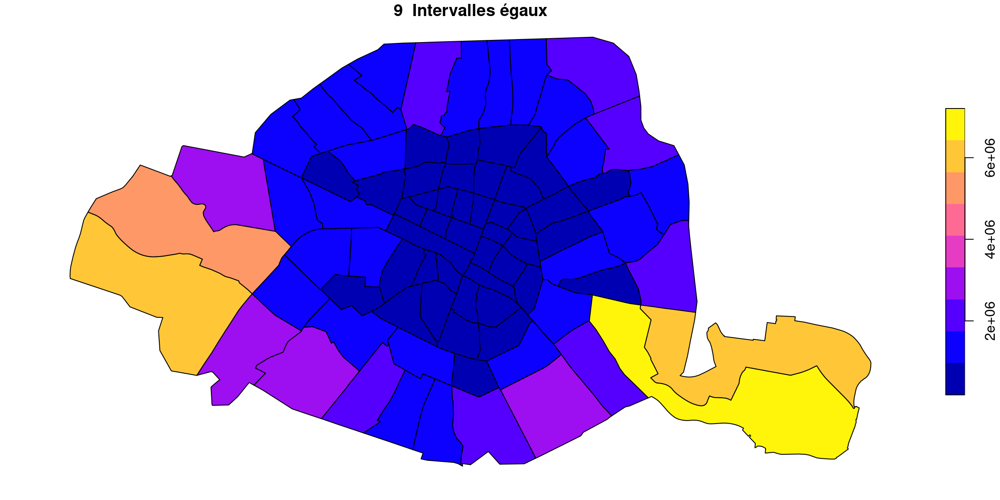
Quel que soit le nombre de classe, le résultat est décevant : le gros tas de quartiers bleus au centre est indistinct, et seules changent les couleurs des quartiers périphériques.
7.3.5 Écart-types
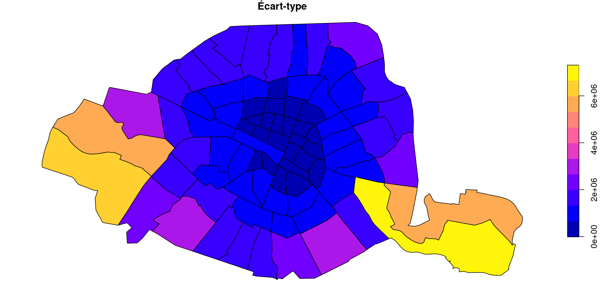
Cette méthode est similaire à la méthode des jolies ruptures sur la variable centrée réduite.
Comparons les deux sorties en affichant les cartes côte à côte (attention cela implique de ne plus afficher la légende, je le fais juste pour cette comparaison) :
par(mar=c(0,0,0,0),mfrow=c(1, 2))
plot(quartiers["surface"], breaks="sd",main = "Écart-type", reset = F,key.pos = NULL)
quartiers$surfCR <- (quartiers$surface - mean(quartiers$surface)) *(1/sd(quartiers$surface) ) #centrer reduire
plot(quartiers["surfCR"], breaks="pretty",main = "Jolies ruptures", reset=F, key.pos = NULL)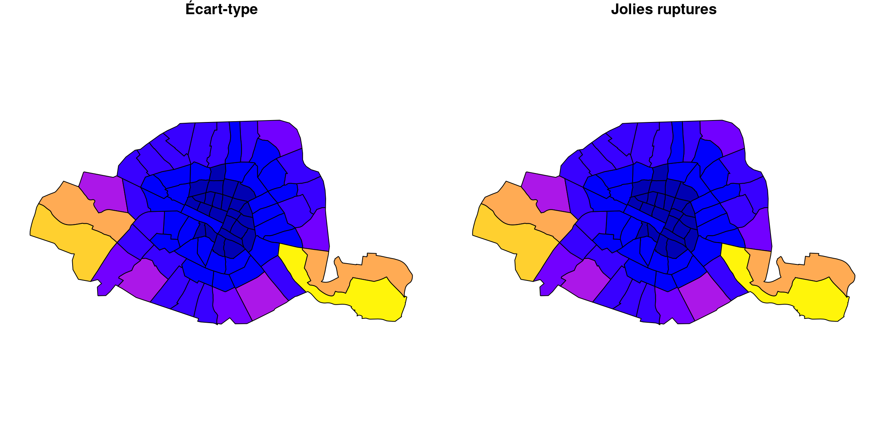
Effectivement , c’est très proche !
7.4 Quelle méthode de classification choisir ?
Il n’y a évidemment pas de critère de choix universel et absolu. Il faut tester, bidouiller, tester, jusqu’à converger vers une solution satisfaisante.
Si on décide de discrétiser les valeurs soi-même, il y a tout de même quelques principes à respecter :
- les classes doivent contenir toutes les valeurs, être sans recouvrement, contigües et distinctes.
- attention aux décimales et aux extrémités !
- Il faut matérialiser la structure interne des données, c’est-à-dire les caractéristiques de la forme de sa distribution : seuils naturels, bi-modalités, queus de distribution etc…
On peut donc en déduire des principes spécialisés :
- si la distribution est uniforme ou très plate \(\rightarrow\) Intervalles égaux
- si la distribution est asymétrique \(\rightarrow\) Effectifs égaux, Jenks , plus rarement progression géométrique pour les phénomènes aux distributions très exponentielles et piquées.
- si la distribution est symétrique \(\rightarrow\) Écart-type, intervalle égaux
Si jamais les méthodes de classifications abordées dans ce chapitre n’étaient pas suffisantes , vous en trouverez d’autres à essayer dans la doc de la fonction classInt du package du même nom.